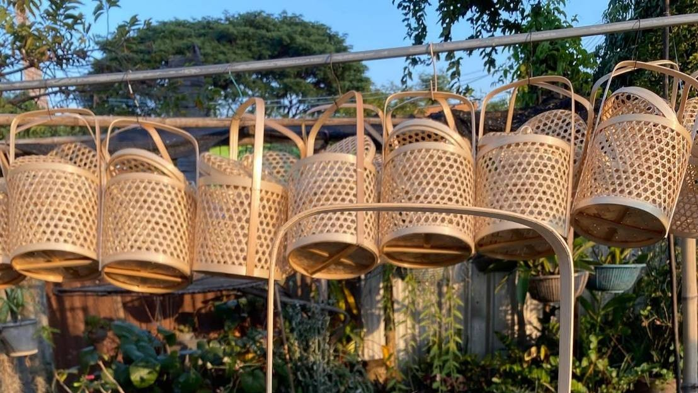
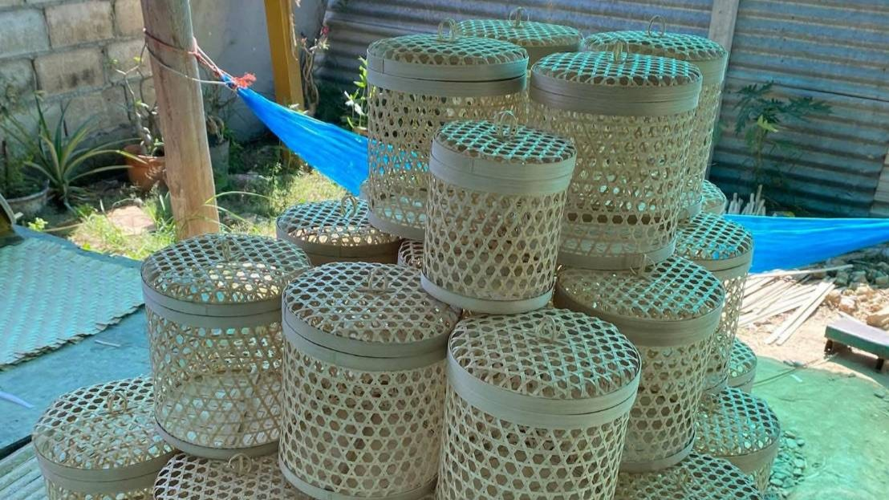
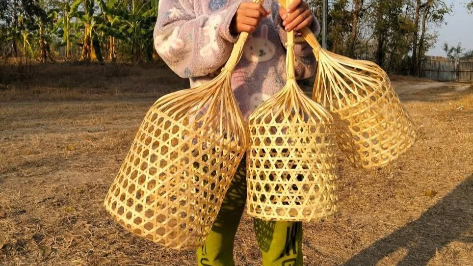

ภูมิปัญญาท้องถิ่นที่สืบทอดจากรุ่นสู่รุ่น

ครอบครัวของข้าพเจ้าเริ่มทำชะลอมสานมานานหลายสิบปี โดยเรียนรู้และถ่ายทอดวิธีการสานจากบรรพบุรุษ ซึ่งเป็นอาชีพเสริมในช่วงว่างจากการทำเกษตรกรรม
ชะลอมสานเป็นภาชนะที่ทำจากไม้ไผ่ ใช้สำหรับบรรจุอาหารและสิ่งของต่าง ๆ ซึ่งสะท้อนถึงวิถีชีวิตเรียบง่ายของคนในชุมชน

การทำชะลอมสานต้องอาศัยความประณีต ความอดทน และประสบการณ์ในการเลือกไม้ไผ่ การผ่า การจักตอก และการสานให้แข็งแรง
งานจักสานไม่เพียงเป็นอาชีพ แต่ยังเป็นการอนุรักษ์ภูมิปัญญาท้องถิ่น ให้คงอยู่สืบไป

ปัจจุบันครอบครัวยังคงทำชะลอมสาน และถ่ายทอดความรู้ให้คนรุ่นใหม่ในชุมชน เพื่อให้เกิดรายได้เสริมและความภาคภูมิใจในอาชีพ
เว็บไซต์นี้จึงจัดทำขึ้น เพื่อเผยแพร่เรื่องราวและคุณค่าของงานชะลอมสาน ให้คนทั่วไปได้รู้จักมากยิ่งขึ้น